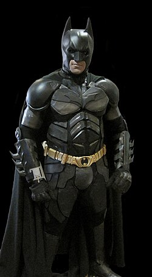
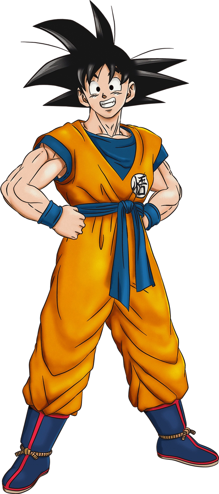

personaje bumblebee

bee el es vliente es leal de otimus velos angiloso
personaje btaman

el brunewayne es multilonario dees una persona normal pero la noche es un justiciero el traje de mucielago salva su ciudad de gotham protege sus cidadanos en peligro los criminales le teme el batman sus disfras le da miedo ademas interrogan combinando psicologiás avanzadas y fuerza intidante el es un detective y sus aydantes la ayadantes la batifamilia alfred robin robin rojo capucha roja nightwing batgil black bat batwoman batwing catwoman pero nunca olivida el pasado es de la muerte de los padre brune wayne
personaje goku

goku es veloz valiente fuerza y agilidad pero no es inteligente torpe pero si es noble buen corazon e incociente una personalidad optimista pero no valiente es las abuja inyecciones le da miedo sea loca y escapa y es comelon nunca se llena
personaje din djarin
el mando el es guerrero es un cazarecopesa pragmático yprotege beby yoda